Buku Manual untuk Teknisi
Cara memakai Dashboard Fasilitas Teknik dan E-Logbook dalam pekerjaan dinas sehari-hari: dari masuk, melihat jadwal, mengisi logbook dan daily check, melaporkan isu, sampai tanda tangan dan cetak.
Kenalan dengan Avengers
Avengers adalah satu alamat, teknik-avengers.com, yang berisi dua bagian dengan satu akun yang sama. Bisa dibuka dari PC, laptop, maupun HP.
- v2.12.1: Manager Fasilitas di lembar Sejarah Peralatan; halaman Panduan dengan manual dan video per peran.
- v2.12.0: ISR terisi dari PDF; saran kode saat mengisi jadwal dinas; notifikasi jadwal disetujui Deputy.
- v2.11.0: Manager Teknik dipilih dari satu daftar; Daily Check Listrik New JATSC; petak baru di Monitoring dan BAPB.
- v2.10.0: tanda tangan jadi kode QR (Bab tanda tangan); PUM per Grup; Daily Check E-JAATS.
Daftar lengkapnya, sejak awal proyek 16 Agustus 2026, ada di bab Riwayat pembaruan.
Papan bersama delapan unit teknik: kondisi peralatan, trouble yang belum selesai, NOTAM, jadwal dinas, kegiatan berkala, personel, sparepart, dokumen, dan sejarah peralatan.
Pencatatan operasional harian tiap unit: Logbook Fasilitas, Daily Check, Preventive Maintenance, formulir LTK dan BAPB, Isu, serta Rekap.
Anda masuk sekali di Dashboard. E-Logbook dibuka dari dalamnya dengan satu tombol, tanpa login lagi.
Gambar layar di buku ini diambil dari PC. Di HP isinya sama, hanya tersusun ke bawah. Video tutorialnya tersedia dalam dua tampilan: HP dan PC / Laptop.
Apa yang boleh dilakukan teknisi
| Pekerjaan | Teknisi | Keterangan |
|---|---|---|
| Melihat Beranda, Trouble, NOTAM, dan Dinas Hari Ini semua unit | Ya | Sama untuk semua akun |
| Melihat jadwal dinas unit mana pun | Ya | Mengisinya hanya yang ditunjuk |
| Membuka E-Logbook dan Database Unit | Ya | Hanya unit yang diberikan ke akun Anda |
| Menambah catatan logbook, daily check, lembar preventive, LTK, isu | Ya | Beserta lampiran foto atau hasil scan |
| Menandai kegiatan berkala sudah dikerjakan | Ya | |
| Mengubah status isu menjadi Closed | Ya | Membuka kembali isu Closed: administrator |
| Menghapus catatan, daily check, atau isu | Tidak | Administrator atau admin unit |
| Menandatangani sebagai Manager Teknik | Tidak | Pejabat |
| Mengelola akun dan hak | Tidak | Administrator, sebagian oleh admin unit |
Tombol yang tidak tampil di akun Anda hampir selalu berarti peran akun itu tidak punya haknya. Itu bukan kerusakan. Kalau Anda memang perlu hak tersebut, sampaikan ke admin unit atau administrator.
Sebagian teknisi juga ditunjuk sebagai PIC (Jadwal Dinas, Sparepart, atau ISR). PIC mendapat satu modul tambahan sesuai tugasnya; cara pakainya dijelaskan di lampiran terpisah.
Mulai: akun, masuk, keluar
Tonton: Masuk dan kenali layarnyaMendaftar akun baru
- Buka teknik-avengers.com di Chrome (Android, PC) atau Safari (iPhone).
- Di kartu masuk, tekan Belum punya akun? Daftar.
- Isi Nama Lengkap, NIK (8 angka), dan pilih Unit yang Dituju.
- Isi Password dan Ulangi Password. Password minimal 6 karakter.
- Tekan KIRIM PENDAFTARAN, lalu kabari admin unit Anda. Akun baru terbentuk sebagai teknisi di unit yang dipilih, tetapi belum bisa dipakai sampai diaktifkan.

Masuk
- Ketik NIK / Username dan Password.
- Tekan MASUK. Anda mendarat di Beranda dashboard.
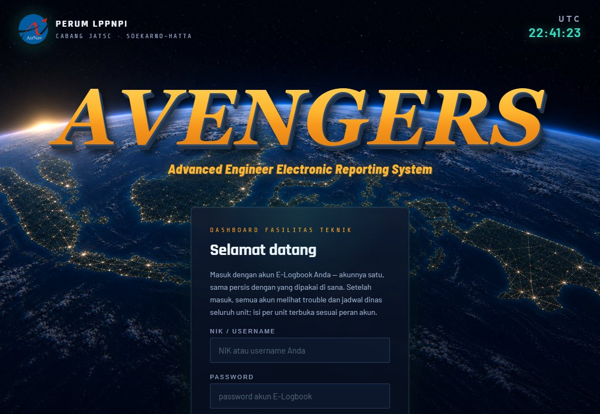
- Menyegarkan halaman (F5) tidak mengeluarkan Anda. Menutup tab berarti keluar dari dashboard di tab itu.
- Salah password delapan kali dalam lima menit membuat percobaan berikutnya ditahan sebentar. Tunggu lima menit, lalu coba lagi.
Keluar
Tekan ikon panah Keluar di kanan atas. Keluar dari dashboard juga memutus E-Logbook, dan sebaliknya.
Selalu tekan Keluar sesudah selesai. Catatan dan tanda tangan tercatat atas nama akun yang sedang masuk.
Lupa atau ingin ganti password
Password lama tidak bisa dilihat siapa pun. Minta admin unit atau administrator menyetel password baru untuk akun Anda, lalu masuk dengan password itu.
Pasang di HP dan notifikasi
Avengers bisa dipasang seperti aplikasi dan mengirim notifikasi ke HP walau layarnya terkunci. Cukup dilakukan sekali di tiap HP.
Tonton: Avengers di HP, Pasang dan NotifAndroid (Chrome)
- Buka teknik-avengers.com di Chrome, lalu masuk.
- Di spanduk bawah “Pasang Avengers di HP ini?”, tekan Pasang, lalu Instal. Spanduk tidak muncul? Tekan ⋮ di kanan atas, pilih Tambahkan ke layar utama.
- Buka Avengers dari ikonnya di layar utama.
- Di spanduk “Aktifkan notifikasi di HP ini?”, tekan Aktifkan, lalu Izinkan.
iPhone (Safari, iOS 16.4 ke atas)
- Buka teknik-avengers.com di Safari (bukan Chrome), lalu masuk.
- Tekan tombol Bagikan, pilih Tambahkan ke Layar Utama, lalu Tambah.
- Buka Avengers dari ikonnya. Di iPhone, notifikasi hanya bisa diaktifkan dari sini.
- Tekan Aktifkan, lalu Izinkan.
Memastikan sudah aktif
- Tekan ikon orang (Profil) di kanan atas.
- Di bagian Notifikasi HP harus tertulis Aktif di HP ini.
- Tekan Kirim notifikasi percobaan. Dalam beberapa detik notifikasi percobaan masuk.
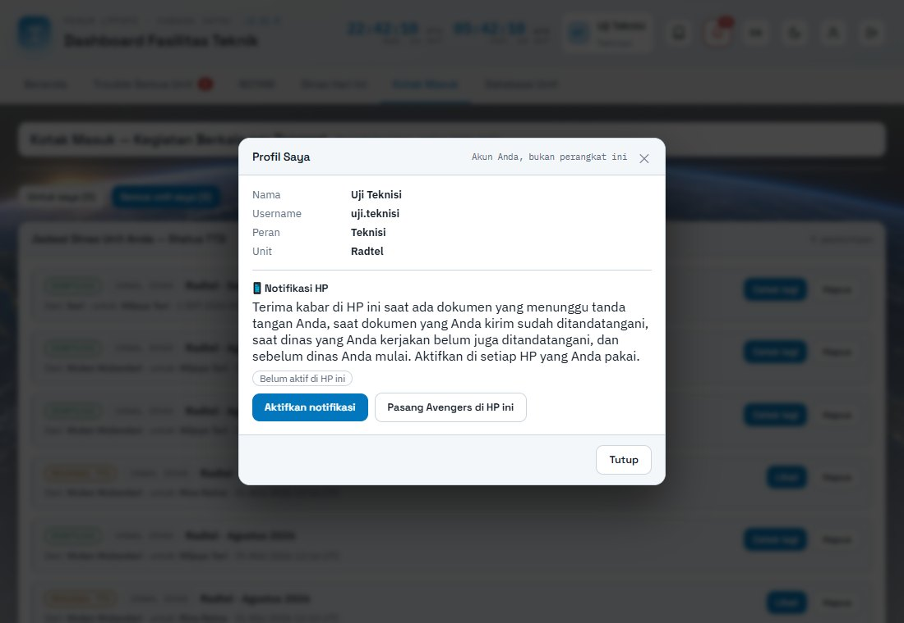
Satu akun boleh aktif di beberapa HP. Ulangi langkah di atas di tiap HP. Jenis notifikasi yang akan Anda terima ada di Bab 16.
Mengenal layar Dashboard
Tonton: Masuk dan kenali layarnya- Buku: membuka E-Logbook.
- Lonceng: pemberitahuan milik akun Anda. Angkanya menghitung yang belum beres.
- Tanda tanya: Panduan: buku manual, video tutorial, dan manual sesuai peran Anda.
- EN / ID: mengganti bahasa tampilan.
- Bulan: mengganti tema terang atau gelap. Pilihan disimpan per akun.
- Orang: Profil (nama, username, peran, unit) dan Notifikasi HP.
- Panah: Keluar.
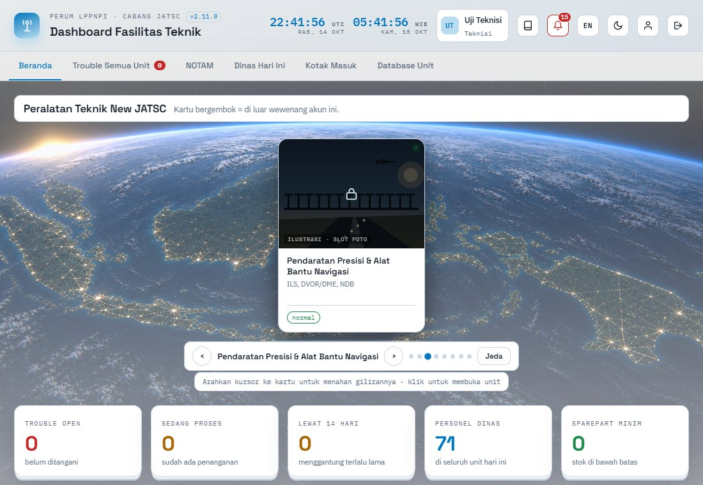
Menu utama
| Menu | Isinya |
|---|---|
| Beranda | Kartu peralatan tiap unit yang berputar bergiliran (klik kartu untuk membuka unitnya), panel Perlu Perhatian, trouble yang belum selesai, dan siapa yang berdinas hari ini. |
| Trouble Semua Unit | Semua isu berstatus Open dan Proses dari seluruh unit, diurutkan dari yang paling lama. Kolom Umur dihitung sampai menit; lewat 14 hari ditandai merah. |
| NOTAM | NOTAM yang terbit karena peralatan unit, jam dalam UTC. Klik satu baris untuk membuka unitnya. |
| Dinas Hari Ini | Siapa berdinas di tiap unit hari ini, dan pita Cakupan 24 Jam. |
| Kotak Masuk | Kegiatan berkala periode berjalan, per tanggal, beserta siapa yang kena. Lihat Bab 6. |
| Database Unit | Isi tiap unit: peralatan, sparepart, jadwal dinas, kegiatan berkala, personel, galeri, dokumen. Lihat Bab 7. |
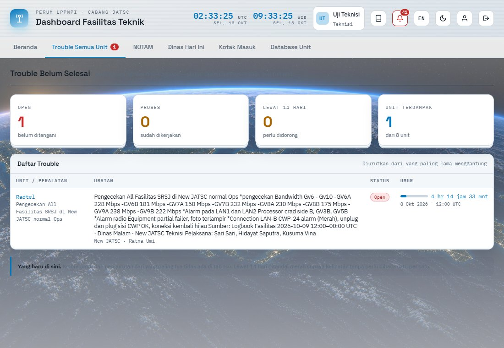
Beranda, Trouble, NOTAM, dan Dinas Hari Ini tampil sama untuk semua akun, supaya siapa pun yang masuk dinas tahu apa yang sedang menggantung di unit sebelah. Perbedaan peran baru terasa di Database Unit: unit yang bukan milik Anda bergembok.
Jadwal dinas
Tonton: Jadwal dinas dan kodenyaMelihat jadwal bulan ini
- Tekan Database Unit, lalu pilih unit Anda. Unit lain bisa dipilih lewat deretan “Jadwal dinas unit lain” untuk melihat jadwalnya saja.
- Tekan subtab Jadwal Dinas.
- Tabelnya berisi satu baris per orang dan satu kolom per tanggal. Kolom hari ini ditandai, tanggal merah diblok sampai bawah, dan kolom nama tetap di tempat saat tabel digeser ke samping.
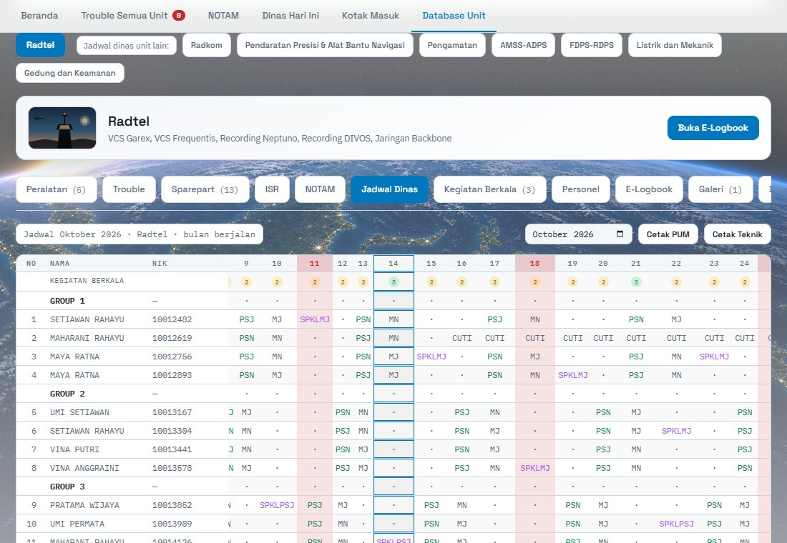
Baris penanda di atas nama-nama menunjukkan tanggal yang ada kegiatan berkalanya. Jadwal diisi oleh admin unit atau PIC Jadwal Dinas, dan lembar resminya ditandatangani Manager Teknik serta Deputy GM Teknik. Kalau ada yang keliru, sampaikan ke mereka.
Arti kode dinas
Huruf terakhir menyebut gedung: J = JATSC, N atau NJ = New JATSC.
| Kode | Artinya | Jam WIB | Jam UTC |
|---|---|---|---|
| PSJ · PSN | Pagi sampai siang, di JATSC atau New JATSC | 07.00–19.00 | 00:00–12:00 |
| MJ · MN | Malam, di JATSC atau New JATSC | 19.00–07.00 | 12:00–00:00 |
| P1 | Pagi, pada hari yang dibagi tiga rombongan | 07.00–14.00 | 00:00–07:00 |
| S1 | Siang, pada hari yang dibagi tiga rombongan | 14.00–20.00 | 07:00–13:00 |
| M1 | Malam, pada hari yang dibagi tiga rombongan | 20.00–07.00 | 13:00–00:00 |
| P1J · S1J · M1J P1NJ · S1NJ · M1NJ | P1, S1, M1 dengan keterangan gedung | sama dengan P1, S1, M1 | |
| SPKL… | Lembur dengan surat perintah, misalnya SPKLPSN | mengikuti kode dasarnya | |
| SAKIT | Sakit. Kode cuti dan libur juga ditulis apa adanya | tidak berdinas | |
Dinas Hari Ini
Menu Dinas Hari Ini merangkum jadwal hari ini untuk seluruh unit. Kartu bertanda SEDANG DINAS adalah rombongan yang bertugas saat ini. Isinya datang sendiri dari tabel Jadwal Dinas, jadi tidak perlu diisi dua kali.
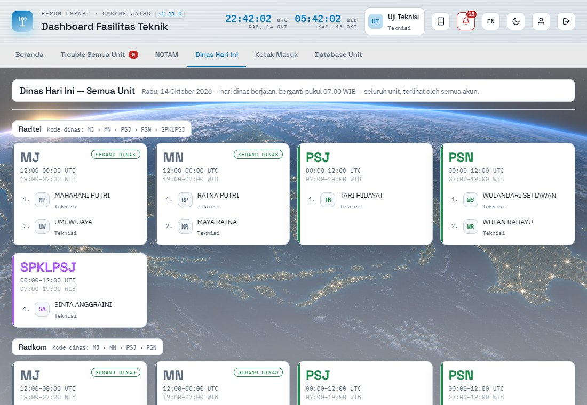
Kegiatan berkala dan Kotak Masuk
Kegiatan berkala adalah pekerjaan yang berulang: mingguan, bulanan, triwulan, semesteran, atau tahunan. Avengers memberi tahu orang yang berdinas pada hari pekerjaan itu jatuh tempo.
Tonton: Kegiatan berkala dan Kotak MasukDi mana pekerjaan itu muncul
| Tempat | Yang ditampilkan |
|---|---|
| Lonceng | Daftar “Untuk Anda”: kegiatan berkala yang perlu Anda kerjakan hari ini (kalau nama Anda ada di jadwal dinas hari itu dan shiftnya cocok), dan lembar Anda yang belum ditandatangani Manager Teknik. |
| Kotak Masuk | Semua kegiatan periode berjalan, per tanggal, beserta nama yang kena. Saringan: Untuk saya atau Semua unit saya. |
| Beranda | Panel Perlu Perhatian, yang lewat jatuh tempo lebih dulu. |
| Tabel Jadwal Dinas | Baris penanda di tanggal yang ada pekerjaannya. |
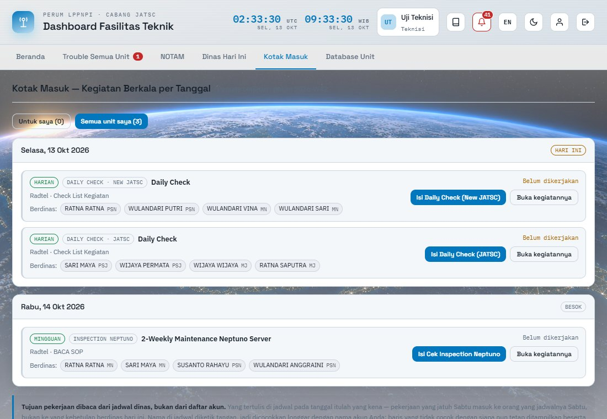
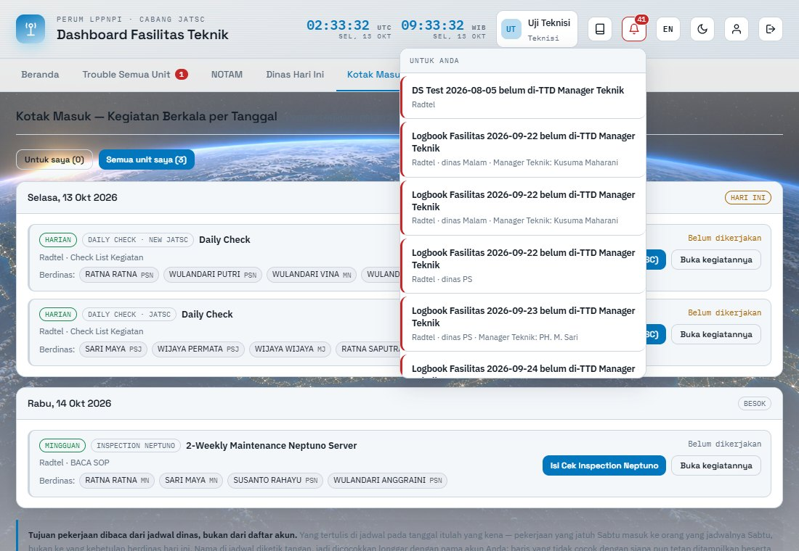
Menandai selesai
- Buka Kotak Masuk, atau Database Unit lalu subtab Kegiatan Berkala.
- Pekerjaan biasa: tekan Tandai selesai sesudah dikerjakan.
- Pekerjaan yang punya lembar di E-Logbook (Daily Check, DS Test, Cek Inspection Neptuno, Monitoring, dan sejenisnya): tekan tombol birunya, misalnya Isi Daily Check atau Isi Cek Inspection Neptuno. Lembarnya terbuka di E-Logbook; begitu lembar tanggal itu tersimpan, tandanya berubah sendiri.
- Buka kegiatannya membawa Anda ke kegiatan itu di subtab Kegiatan Berkala unitnya.
Kegiatan yang bersumber dari lembar E-Logbook sengaja tidak bisa ditandai dengan tangan. Buktinya adalah lembar kerjanya sendiri, supaya tidak ada dua catatan yang berselisih.
Tanda selesai berlaku untuk periode berjalan saja. Minggu atau bulan berikutnya pekerjaan itu kembali kosong dengan sendirinya. Lencana di Kotak Masuk hanya menghitung yang tertuju ke Anda dan belum beres.
Database Unit
Tekan Database Unit, pilih unit, lalu pilih subtabnya.
| Subtab | Isinya | Yang bisa dilakukan teknisi |
|---|---|---|
| Peralatan | Kartu tiap alat, dikelompokkan per grup | Klik kartu untuk membuka identitas dan sejarahnya. Daftar alatnya sendiri diatur administrator. |
| Trouble | Isu unit ini yang belum selesai | Melihat. Mengisinya dari tab Isu di E-Logbook. |
| Sparepart | Stok sparepart unit | Tampil hanya bagi yang berhak mengisinya. |
| ISR · NOTAM | Izin Stasiun Radio unit beserta masa berlakunya, dan NOTAM yang terbit karena peralatan unit | Melihat. PDF izin yang dilampirkan bisa dibuka dari tautan 📄 di bawah nama stasiun. Mengisinya: PIC ISR dan admin unit. |
| Jadwal Dinas | Jadwal bulanan | Melihat. Lihat Bab 5. |
| Kegiatan Berkala | Daftar pekerjaan berulang unit | Menandai selesai. Lihat Bab 6. |
| Personel | Lisensi, rating, sertifikat, dan masa berlakunya | Mengurus data personel unit sendiri. |
| E-Logbook | Cuplikan catatan logbook unit | Melihat. Tombol Buka E-Logbook di kepala unit membuka E-Logbook unit itu. |
| Galeri · Dokumen | Foto dokumentasi dan berkas dokumen unit | Mengunggah dan membuka. |
Sejarah peralatan
Tonton: Sejarah peralatan dan stiker QR- Di subtab Peralatan, klik kartu alatnya. Panel Sejarah dan Identitas alat itu muncul di bawah deretan kartu.
- Di panel Sejarah, tekan Tulis. Daftar kejadian berubah menjadi tabel yang bisa disunting.
- Tekan Tambah kejadian untuk baris baru.
- Isi Tanggal, Kejadian (misalnya “Penggantian antena VHF #3”), Rincian (apa yang dikerjakan, hasilnya, sisa pekerjaannya), dan Keterangan bila perlu.
- Pilih Penanggung jawab untuk kejadian itu. Dialah yang menandatanganinya.
- Tekan Simpan. Tanda tangan Anda sebagai teknisi pelaksana dipasang dari akun Anda.
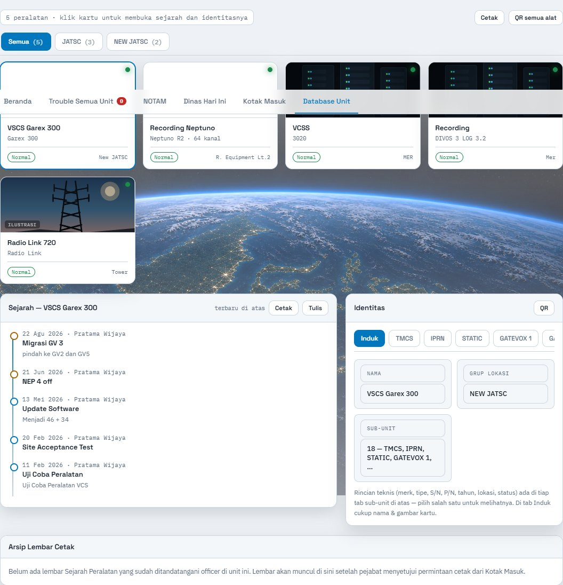
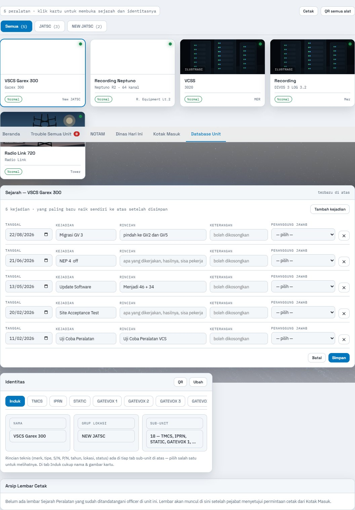
Kejadian baru bertanda MENUNGGU TTD sampai penanggung jawab menyetujui. Mengubah baris yang sudah disetujui akan meminta tanda tangan ulang.
Tombol Cetak di panel Sejarah mencetak riwayat alat itu saja (induk beserta sub-unitnya). Tombol QR di panel Identitas, atau QR semua alat, mencetak stiker QR. Alat yang sudah ditempeli stiker bisa dipindai kamera HP; halaman sejarah alat itu langsung terbuka, tampil seperti lembar cetaknya.
Di bawah tiap alat pada lembar cetak ada blok Mengetahui, Manager Fasilitas unit itu, berisi nama dan TTD tersimpan Manager Fasilitas yang ditetapkan admin unit (baris Mengetahui — Manager Fasilitas di atas panel Sejarah). Kalau belum ditetapkan, bloknya dicetak kosong untuk ditandatangani tangan. Di lembar cetak, tiap alat ditutup blok “Mengetahui, Manager Fasilitas” berisi nama dan tanda tangan Manager Fasilitas unit itu; kalau belum ditetapkan, blok itu dicetak kosong untuk tanda tangan tangan.
Lisensi yang hampir habis
Peringatan menyala dua bulan sebelum lisensi, rating, atau sertifikat habis. Peringatan itu muncul di Beranda dan di lonceng akun pemiliknya. Pastikan baris personel Anda terhubung dengan akun Anda supaya peringatannya sampai.
Masuk ke E-Logbook
- Di Dashboard, tekan ikon buku di kanan atas. E-Logbook terbuka di tab yang sama, dengan akun yang sama.
- Kalau akun Anda memegang lebih dari satu unit, pilih unitnya di kotak Unit. Unit yang terakhir Anda pilih diingat.
- Pilih tab pekerjaan yang akan diisi.
- Untuk kembali, tekan ← Dashboard Fasilitas Teknik.
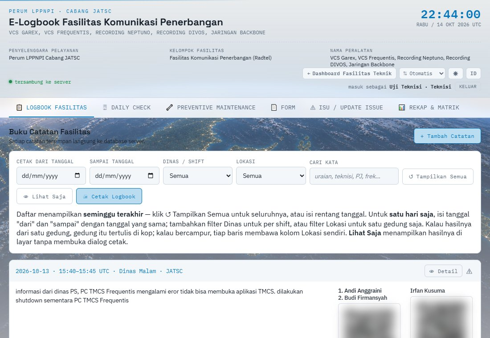
| Tab | Untuk apa |
|---|---|
| 📋 LOGBOOK FASILITAS | Buku catatan kejadian dan pekerjaan selama dinas |
| 🖥 DAILY CHECK | Lembar pemeriksaan harian peralatan |
| 🔧 PREVENTIVE MAINTENANCE | Lembar pemeliharaan terjadwal: DS Test, meter reading, weekly check, dan lainnya |
| 📄 FORM | Formulir resmi: LTK, BAPB, dan Monitoring Frekuensi |
| ⚠ ISU / UPDATE ISSUE | Daftar gangguan yang sedang ditangani |
| 📊 REKAP & MATRIK | Rekap kejadian yang pernah dialami unit dan siapa yang menanganinya |
Tab dan subtab menyesuaikan unit. Tab yang formulirnya tidak ada di unit Anda memang tidak ditampilkan.
Jam di kanan atas dan jam yang terisi otomatis di form berasal dari jam server dalam UTC, bukan jam HP atau PC Anda. Rumusnya: UTC = WIB − 7 jam. Pukul 09.10 WIB ditulis 02:10; pukul 03.00 WIB ditulis 20:00 tanggal sebelumnya.
Alat di kepala E-Logbook
- Pilihan orientasi kertas (Otomatis, Portrait, Landscape) untuk mencetak.
- Tombol tema 🌙 dan bahasa.
Logbook Fasilitas
Tonton: Mengisi Logbook FasilitasMenambah catatan
- Di tab LOGBOOK FASILITAS, tekan + Tambah Catatan.
- Periksa Tanggal dan Jam Mulai (UTC). Keduanya sudah terisi otomatis; ubah kalau kejadiannya bukan saat ini. Isi Jam Selesai (UTC) kalau pekerjaannya sudah selesai.
- Pilih Dinas / Shift dan Lokasi (JATSC atau New JATSC). Lokasi terakhir diingat di perangkat itu. Unit Radkom juga mengisi Frekuensi.
- Tulis Uraian Pekerjaan / Kejadian: apa yang dikerjakan atau terjadi, hasilnya, dan sisa pekerjaannya.
- Kalau catatan ini berdasar lembar lain (BAPB, LTK, atau kegiatan berkala), tekan + Tautkan Dokumen dan pilih lembarnya.
- Kalau perlu, tambahkan Lampiran (lihat di bawah).
- Periksa Nama Teknisi Pelaksana. Tekan + Nama kalau dikerjakan lebih dari satu orang.
- Tekan kotak TTD Teknisi (“Tekan untuk tanda tangan”). Kotak berubah menjadi ✓ Ditandatangani. Lihat Bab 14.
- Di Manager Teknik (nama), pilih Manager Teknik dari daftar. Tanda tangannya dibubuhkan belakangan lewat kotak masuk akunnya.
- Tekan 💾 Simpan Catatan.
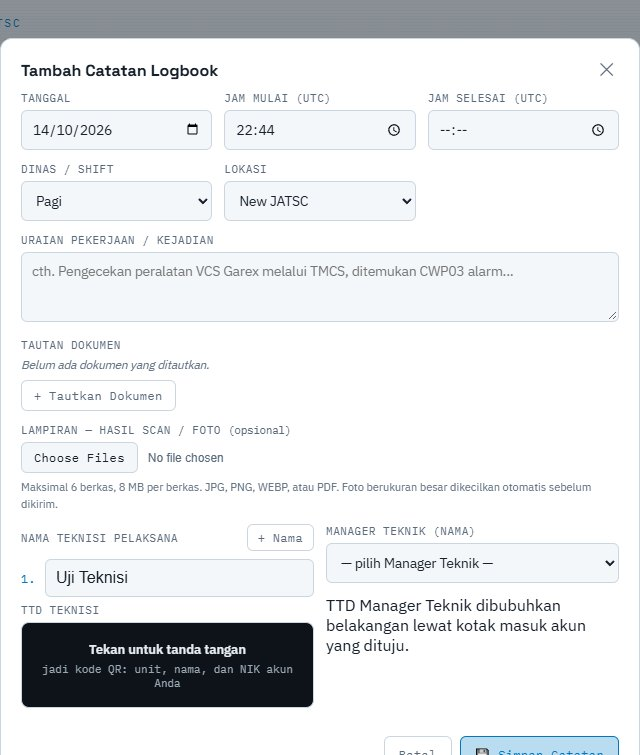
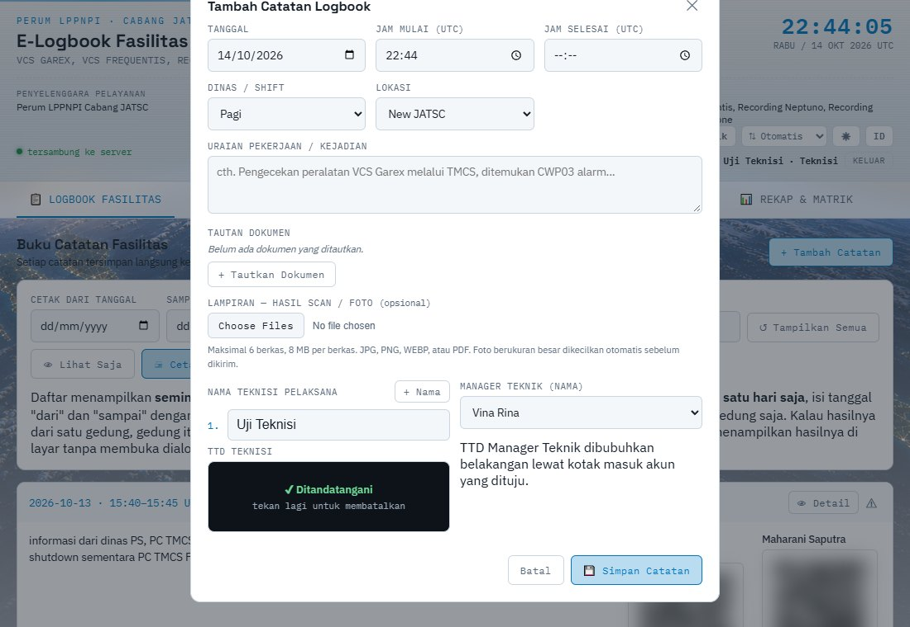
Tetap pilih Manager Teknik-nya. Kalau ia sedang digantikan PH (Pelaksana Harian), sistem ikut mengantarkan lembar itu ke PH-nya. Nama PH tidak perlu diketik.
Saat menambah nama dengan + Nama, nama rekan muncul sebagai saran. Rekan dari unit lain ditandai nama unitnya, misalnya “Fakhrizal Ahmad (Radtel)”.
Catatan langsung tersimpan di server dan muncul paling atas. Pejabat yang dituju dikabari ada lembar yang menunggu tanda tangannya, dan Anda dikabari begitu ia menandatangani.
Lampiran foto atau hasil scan
- Paling banyak 6 berkas per catatan, masing-masing paling besar 8 MB.
- Jenis yang diterima: JPG, PNG, WEBP, PDF.
- Foto besar dikecilkan otomatis sebelum dikirim. PDF tidak diubah.
Tombol di kartu catatan
| Tombol | Gunanya |
|---|---|
| 👁 Detail | Melihat catatan lengkap beserta tanda tangan dan lampirannya |
| ⚠ Buat Isu | Meneruskan catatan menjadi isu tanpa mengetik ulang. Lihat Bab 13 |
| ✎ Sunting | Membetulkan catatan. Tampil hanya pada catatan yang masih boleh Anda ubah |
Mencari catatan lama
Daftar menampilkan seminggu terakhir. Untuk yang lebih lama, pakai baris saringan di atas daftar: rentang tanggal, Dinas / Shift, Lokasi, dan kotak Cari kata (uraian, nama teknisi, penanggung jawab, frekuensi). Tekan ↺ Tampilkan Semua untuk menampilkan seluruh catatan.
Daily Check
Tonton: Mengisi Daily Check- Buka tab DAILY CHECK. Riwayat lembar seminggu terakhir tampil lebih dulu.
- Tekan + Form Baru.
- Kalau unit Anda punya lebih dari satu lembar, pilih lembarnya di subtab atas form (lihat tabel di bawah).
- Periksa tanggal dan dinasnya.
- Semua butir berawal dari centang hijau (Normal). Klik kotaknya untuk mengganti kondisi: Normal → Alarm / Perlu Pantau → Gangguan. Butir yang berupa angka (suhu, tegangan, beban) diisi nilainya.
- Isi keterangan untuk butir yang tidak normal. Lampirkan foto bila perlu.
- Di bagian bawah form: periksa nama teknisi, tekan kotak TTD Teknisi, pilih Manager Teknik di Mengetahui — Manager Teknik, lalu tekan 💾 Simpan Daily Check.
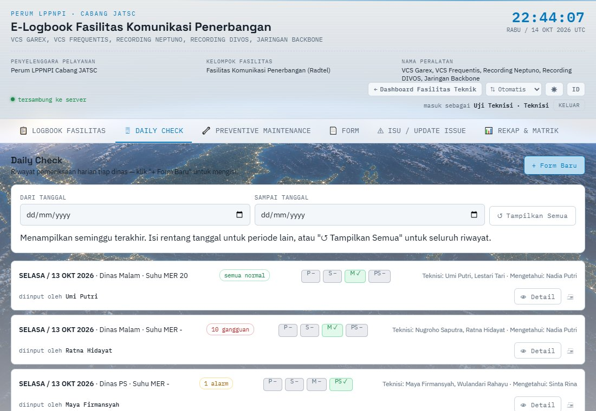
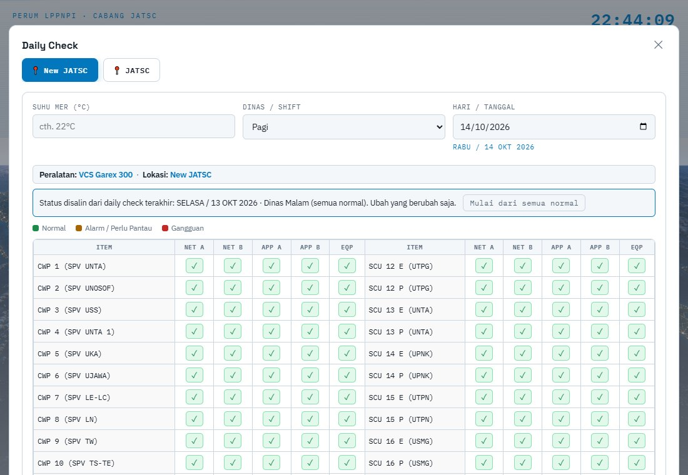
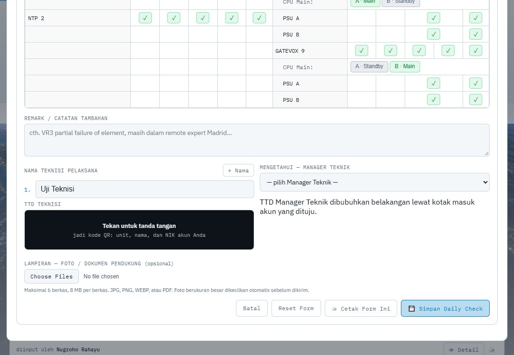
| Unit | Lembar Daily Check |
|---|---|
| Radtel | VCS Garex 300, dipisah New JATSC dan JATSC |
| Radkom | Daily Check Unit Radkom New JATSC |
| PPABN / Navigasi | ILS empat runway dan DVOR/DME dua site |
| Pengamatan | Radar CKG 3 dan Fasilitas Pengamatan |
| AMSS-ADPS | AMHS, AADPS, D-ATIS |
| Listrik & Mekanik | JATSC: STS, MDS, Beban Listrik, UPS · NEW JATSC: MDS, UPS, Chiller-Pompa-AHU |
| FDPS-RDPS | NEW JATSC: NEW-JAATS · JATSC: E-JAATS software dan hardware |
| Gedung & Keamanan | Toilet & Mushalla, Lift & Akses Door, per gedung |
Tandai butirnya Alarm atau Gangguan, tulis rinciannya di Logbook Fasilitas, lalu buat isunya dari catatan itu. Dengan begitu gangguan muncul di papan Trouble semua unit.
Preventive Maintenance
Lembar pemeliharaan terjadwal. Satu tab berisi beberapa subtab, satu subtab untuk satu jenis pekerjaan.
- Buka tab PREVENTIVE MAINTENANCE, lalu pilih subtab pekerjaannya.
- Tekan + Form Baru di subtab itu untuk membuka lembar baru.
- Isi butir-butirnya. Sebagian isian (frekuensi, merk, alamat) sudah terisi dari lembar bakunya dan bisa Anda timpa.
- Lampirkan dokumen bila perlu, tekan kotak TTD, pilih Manager Teknik, lalu simpan.
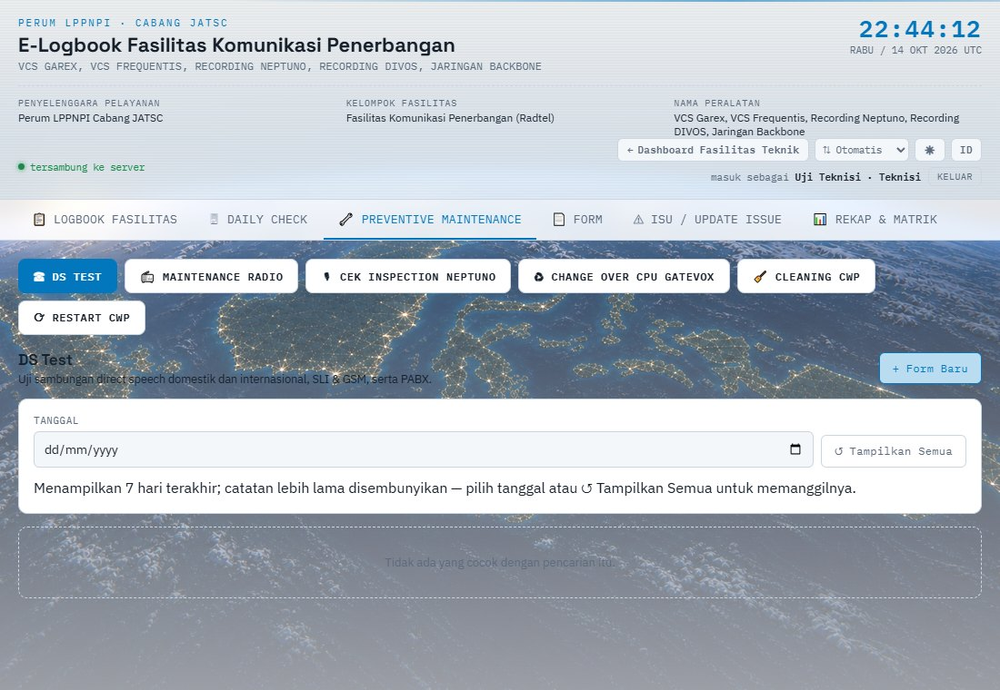
| Unit | Subtab yang tersedia |
|---|---|
| Radtel | DS Test · Maintenance Radio · Cek Inspection Neptuno · Change Over CPU Gatevox · Cleaning CWP · Restart CWP |
| Pengamatan | Weekly Check: CKG 3 · SMR T1 · SMR T3 |
| PPABN / Navigasi | Ground Check · Meter Reading |
| Listrik & Mekanik | Panel Distribusi · Maint STS · Maint UPS · Chiller · AHU · Genset · Grounding & Petir |
| Radkom | Mingguan · Bulanan · Radio R&S TX · Radio R&S RX · Battery · TX VHF · Antena VHF |
- Lembar masih bisa disunting lewat tombol ✎ selama belum ditandatangani Manager Teknik.
- Lembar yang terhubung dengan kegiatan berkala (misalnya DS Test) otomatis menandai kegiatan itu selesai di Dashboard.
Form: LTK, BAPB, Monitoring
Tab FORM berisi formulir resmi. Pilih subtabnya.
| Subtab | Kapan dipakai |
|---|---|
| 🛠 LTK | Laporan Terjadinya Kerusakan: dibuat ketika ada kerusakan, berisi laporan kerusakan dan kegiatan perbaikannya. Ditandatangani Manager Teknik. |
| 📦 BAPB | Berita Acara Pemasangan Barang: nomor berita acara, daftar barang yang terpasang, dan tiga tanda tangan: Penerima Barang (unit, jabatan, nama, dan NIK diketik; ada saran unit dan jabatan), Manager Teknik (dipilih), dan petugas pemasangan. Bisa dilampiri dokumen. |
| 📶 MONITORING FREKUENSI | Khusus unit Radkom. Tiga petak tanda tangan: Manager Operasi (pilih unit ACC, APP, TOWER, atau ADC dan jabatannya; NIK boleh diketik), Manager Teknik, dan teknisi. TTD Manager Operasi bisa dibubuhkan di form atau menyusul dari jendela detail. |
Cara mengisinya sama dengan lembar lain: tekan tombol buat (+ Buat LTK, + Buat BAPB), isi, lampirkan, tekan kotak TTD, pilih Manager Teknik, simpan. Daftar menampilkan 7 hari terakhir; tekan ↺ Tampilkan Semua untuk yang lebih lama. LTK dan BAPB yang sudah tersimpan bisa ditautkan ke catatan logbook lewat + Tautkan Dokumen.
Isu dan papan Trouble
Isu adalah gangguan yang perlu dipantau sampai selesai. Setiap isu Open otomatis tampil di Trouble Semua Unit pada Dashboard.
Tonton: Melaporkan isu (trouble)Cara tercepat: dari catatan logbook
- Di kartu catatan logbook, tekan ⚠ (atau ⚠ Buat Isu di jendela Detail).
- Form Tambah Isu terbuka dan sudah terisi: Jenis Issue, Keterangan, Lokasi, Tanggal dan Jam Report, serta lampiran catatan itu sebagai bukti saat kejadian.
- Periksa dan betulkan seperlunya, lalu tekan 💾 Simpan Isu.
Membuat isu dari awal
- Buka tab ISU / UPDATE ISSUE, tekan + Tambah Isu.
- Isi Jenis Issue (judul singkat), Keterangan, Lokasi, Tanggal, dan Jam Report (UTC).
- Lampirkan Foto / Dokumen Saat Kejadian bila ada (maksimal 6 berkas, 8 MB per berkas).
- Tekan 💾 Simpan Isu. “Dilaporkan Oleh” otomatis akun yang sedang masuk.
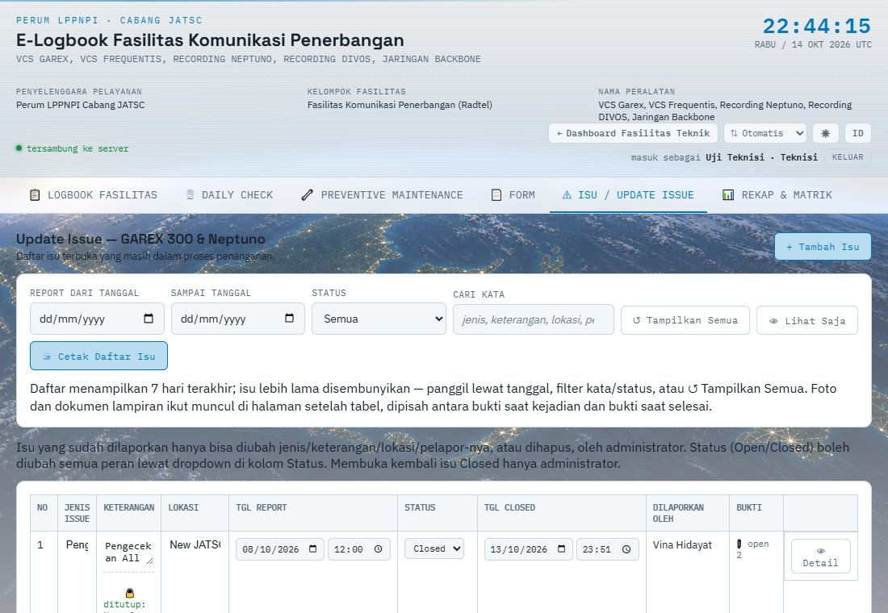
Menutup isu
- Di tabel Isu, ubah pilihan di kolom Status menjadi Closed.
- Isi keterangan penutupan, dan lampirkan bukti saat selesai bila ada.
- Simpan. Isu hilang dari papan Trouble.
Isu baru selalu berstatus Open. Mengubah jenis, keterangan, lokasi, atau pelapor, serta menghapus isu, hanya bisa dilakukan administrator atau admin unit. Membuka kembali isu yang sudah Closed hanya bisa administrator. Kalau ada yang perlu dikoreksi, sampaikan ke mereka.
Membaca papan Trouble di Dashboard
- Diurutkan dari yang paling lama menggantung.
- Kolom Umur dihitung dari Tanggal dan Jam Report sampai menit, misalnya “32 hr 10 jam 5 mnt”.
- Yang lewat 14 hari ditandai merah.
Tanda tangan QR
Sejak versi 2.10, tanda tangan tidak lagi digambar. Menandatangani cukup dengan menekan kotak TTD selagi Anda masuk; tanda tangan tersimpan sebagai kode QR atas nama akun Anda.
Tonton: Tanda tangan QRMenandatangani lembar
- Isi lembarnya seperti biasa.
- Tekan kotak TTD Teknisi yang bertuliskan “Tekan untuk tanda tangan”.
- Kotak berubah menjadi ✓ Ditandatangani. Salah tekan? Tekan sekali lagi untuk membatalkan, selama lembar belum disimpan.
- Pilih Manager Teknik yang dituju, lalu simpan lembarnya.
Isi kode QR
| Baris | Isinya |
|---|---|
| Kop | Perum LPPNPI Cabang JATSC |
| Unit atau jabatan | Unit Anda. Untuk pejabat: jabatannya, misalnya Manager Teknik |
| Nama | Nama lengkap akun yang menandatangani |
| NIK | NIK akun itu |
- Di tengah QR ada lambang Avengers. Di layar, QR bisa diketuk untuk diperbesar.
- Dipindai dengan kamera HP, QR terbaca baris-baris di atas.
- Identitasnya diambil dari akun yang sedang masuk, bukan diketik. Karena itu tidak ada yang bisa menandatangani atas nama orang lain.
- Tanda tangan goresan pada lembar-lembar lama sudah diubah menjadi QR.
Yang tercetak di QR adalah nama dan NIK akun Anda. Buka Profil (ikon orang) untuk melihatnya. Kalau ada yang salah, minta admin unit atau administrator membetulkannya sebelum Anda menandatangani lembar.
Alur tanda tangan satu lembar
- Anda mengisi lembar, menekan kotak TTD, memilih Manager Teknik, lalu menyimpan.
- Manager Teknik menerima notifikasi “Perlu tanda tangan” dan lembarnya masuk ke kotak masuk TTD miliknya. Kalau ia sedang digantikan PH (Pelaksana Harian), lembarnya juga sampai ke PH itu.
- Pejabat memeriksa lalu menandatangani. Anda menerima notifikasi “Sudah ditandatangani”.
- Kalau 30 menit sesudah dinas selesai lembar belum ditandatangani, Anda menerima notifikasi “Belum ditandatangani”, dan lembarnya tercantum di lonceng Dashboard. Ingatkan pejabatnya.
| Formulir | Petak pihak lain |
|---|---|
| Logbook Fasilitas · Daily Check · Preventive · LTK | Manager Teknik, dipilih dari daftar |
| Monitoring Frekuensi | Manager Operasi (unit dan jabatan dipilih) dan Manager Teknik |
| BAPB | Penerima Barang (unit, jabatan, nama, NIK diketik) dan Manager Teknik |
| Sejarah Peralatan | Penanggung jawab yang dipilih per kejadian |
Lembar yang ditandatangani PH memuat nama PH beserta keterangan Manager Teknik yang digantikannya, misalnya “Deny Saputra (PH Manager Teknik Arya Gunawan)”, dan QR-nya menyebut jabatan “PH Manager Teknik”. Teknisi tidak perlu mengetik nama PH.
Mencetak dan Rekap
Mencetak
| Tombol | Hasilnya |
|---|---|
| 🖨 Cetak Logbook | Tabel logbook menurut rentang tanggal, Dinas, dan Lokasi yang sedang dipilih di saringan |
| 🖨 di riwayat Daily Check atau lembar lain | Lembar itu, dalam bentuk formulir bakunya |
| 🖨 Cetak Daftar Isu | Tabel isu menurut rentang tanggal report dan status |
| 👁 Lihat Saja | Pratinjau lembar tanpa mencetak |
- Untuk mencetak satu hari, isi tanggal “dari” dan “sampai” dengan tanggal yang sama. Tambahkan saringan Dinas untuk cetak per shift.
- Lampiran ikut tercetak di halaman sesudah tabel. Gambar ditempel; PDF hanya didaftar namanya.
- Orientasi kertas diatur di kepala E-Logbook: Otomatis, Portrait, atau Landscape.
- Di dialog cetak peramban, pilih printer, atau Simpan sebagai PDF untuk mendapat berkas PDF.
- Tanda tangan tercetak sebagai kode QR. Setiap cetakan membawa tanda sumber “teknik-avengers.com”.
Cetak ditolak selama masih ada lembar atau catatan di rentang itu yang tanda tangannya belum lengkap. Lengkapi dulu tanda tangannya; lonceng di Dashboard menyebut lembar mana yang belum. Hanya administrator yang bisa mencetak lebih dulu untuk memeriksa lembar.
Rekap & Matrik
Tab REKAP & MATRIK merangkum kejadian yang pernah dialami unit dari Logbook, LTK, dan Isu: jenis kejadian per periode, dan siapa yang sudah pernah menanganinya. Pilih Per minggu atau Per bulan, atur rentangnya (tombol cepat: Bulan ini, 3 bulan, 1 tahun), dan klik satu sel untuk melihat catatan di baliknya. 🖨 Cetak Rekap mencetaknya.
Daily check dan monitoring tidak ikut dihitung, karena isinya pemeriksaan terjadwal, bukan kejadian.
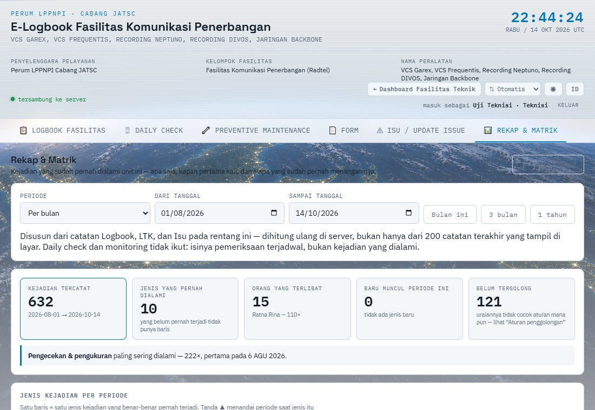
Daftar notifikasi
Notifikasi HP berlaku sesudah Anda mengaktifkannya (Bab 3). Ketuk notifikasi mana pun untuk membuka Avengers di tempat yang dimaksud.
| Notifikasi | Dikirim ke | Kapan |
|---|---|---|
| 🕖 Pengingat dinas | Anda | Satu jam sebelum dinas Anda mulai |
| 📋 Kegiatan berkala | Yang berdinas | Satu jam sesudah dinas mulai, berisi daftar yang belum dikerjakan |
| 📅 Daftar dinas diperbarui | Orang satu unit | Tiap daftar dinas disimpan dengan perubahan. Menyebut tanggal dan kode yang berubah |
| 🛠️ Riwayat peralatan diperbarui | Anggota unit | Tiap sejarah alat ditambah, diubah, atau dihapus |
| ✅ Sudah ditandatangani | Teknisi pengirim | Begitu pejabat membubuhkan tanda tangan |
| ⏰ Belum ditandatangani | Teknisi pengirim | 30 menit sesudah dinas selesai |
| 🔔 Perlu tanda tangan | Pejabat yang dituju (atau PH-nya) | Begitu lembar disimpan |
Selain itu, lonceng di Dashboard menampung pemberitahuan milik Anda (kegiatan berkala hari ini dan lisensi yang hampir habis) walau notifikasi HP tidak diaktifkan.
Kalau ada masalah
| Gejala | Yang dilakukan |
|---|---|
| “Username atau password salah” | Periksa huruf besar-kecil dan NIK. Kalau baru mendaftar, akun mungkin belum diaktifkan. Hubungi admin unit. |
| Masuk berhasil, tetapi unit bergembok atau E-Logbook kosong | Akun belum diberi unit. Minta admin unit atau administrator menetapkannya. |
| Kartu masuk menyebut server tidak terjawab | Periksa internet Anda, lalu coba lagi beberapa menit kemudian. Kalau tetap, kabari administrator. |
| Tampilan masih versi lama sesudah ada pembaruan | PC: tekan Ctrl+F5. HP: tutup Avengers sepenuhnya lalu buka lagi. |
| Tombol Pasang atau Aktifkan notifikasi tidak muncul | Tutup tab atau aplikasi Avengers lalu buka lagi. iPhone: harus dibuka dari ikon di Layar Utama dan iOS 16.4 ke atas. |
| Notifikasi tidak berbunyi | Periksa mode senyap dan izin notifikasi Avengers di setelan HP. Di Profil, pastikan tertulis “Aktif di HP ini”, lalu kirim notifikasi percobaan. |
| “Notifikasi diblokir di HP ini” | Buka setelan situs atau aplikasi Avengers di HP, izinkan Notifikasi, lalu tekan Aktifkan lagi. |
| Lampiran ditolak | Pastikan jenisnya JPG, PNG, WEBP, atau PDF, ukurannya di bawah 8 MB, dan jumlahnya tidak lebih dari 6. |
| Jam catatan tampak “salah” | E-Logbook memakai UTC. Kurangi 7 jam dari WIB. |
| Nama atau NIK di QR tanda tangan salah | QR mengambil nama dan NIK dari akun. Minta admin unit atau administrator membetulkan akun Anda. |
| Manager Teknik yang dituju tidak ada di daftar | Daftar berisi akun pejabat yang aktif. Kabari administrator. |
| Salah isi sesudah tersimpan | Pakai ✎ Sunting kalau tombolnya ada. Kalau tidak ada, minta admin unit atau administrator membetulkan. |
| Kegiatan berkala tidak bisa ditandai selesai | Kegiatan itu bersumber dari lembar E-Logbook. Isi lembarnya lewat tombol “Isi …”-nya. |
| Lembar tidak bisa dicetak | Masih ada tanda tangan yang belum lengkap. Lihat lonceng untuk tahu lembar mana, lalu lengkapi atau ingatkan pejabatnya. |
Untuk hal lain, hubungi admin unit Anda lebih dulu. Admin unit meneruskan ke administrator bila perlu.
Ringkasan satu dinas
Urutan yang biasa dijalani teknisi dari awal sampai akhir dinas.
- Sebelum dinas. HP mengingatkan satu jam sebelumnya. Buka Avengers, lihat Trouble Semua Unit dan catatan logbook rombongan sebelumnya.
- Awal dinas. Buka E-Logbook, isi Daily Check.
- Lihat lonceng dan Kotak Masuk. Kerjakan kegiatan berkala yang jatuh ke Anda hari ini, lalu tandai selesai atau isi lembarnya.
- Selama dinas. Catat setiap pekerjaan dan kejadian di Logbook Fasilitas, lengkap dengan lampiran, TTD QR, dan Manager Teknik yang dituju.
- Ada gangguan. Buat isu dari catatannya. Kalau terjadi kerusakan, buat LTK. Tulis riwayatnya di Sejarah Peralatan alat itu.
- Gangguan selesai. Ubah status isunya menjadi Closed dengan keterangan penutupan.
- Akhir dinas. Lihat lonceng: pastikan tidak ada lembar Anda yang belum ditandatangani. Tekan Keluar kalau memakai perangkat bersama.
Riwayat pembaruan
Avengers dibangun sejak 16 Agustus 2026 dan terus diperbarui. Sampai versi 2.12.1 tercatat 387 perubahan. Berikut ringkasannya, dari yang terbaru.
v2.12.1 · 15 Oktober 2026
- Sejarah Peralatan: Manager Fasilitas per unit. Lembar cetak menutup tiap alat dengan blok “Mengetahui, Manager Fasilitas”. Ditetapkan administrator atau admin unit lewat tombol Atur di panel Sejarah.
- Kotak Masuk: Manager Teknik bisa mencentang beberapa lembar E-Logbook lalu menandatanganinya sekaligus dengan TTD terpilih.
- Halaman Panduan di teknik-avengers.com/panduan: buku manual teknisi, manual per peran (Admin Unit, PIC Jadwal Dinas, PIC Sparepart, PIC ISR, Manager Teknik), dan video tutorial 14 bab dalam tampilan HP dan PC.
- Administrator bisa menyunting manual, video, dan logo panduan langsung dari halamannya.
- Kelola Akun: nomor urut di Daftar Akun dan panel Aktivasi Akun Unit.
v2.12.0 · 15 Oktober 2026
- ISR dari PDF: isian ISR terisi sendiri dari PDF cetakan SDPPI/DJID, dan PDF-nya ikut jadi lampiran. Tautan PDF izin tampil di tabel untuk semua yang membuka.
- Jadwal dinas: mengetik kode memunculkan saran di bawah sel (ketik S, muncul S1 dan seterusnya).
- Jadwal dinas yang disetujui Deputy masuk Kotak Masuk administrator, dan pengurus jadwal serta Manager Teknik penanda tangannya dikabari lewat notifikasi HP.
- Lembar PUM per Grup terlihat oleh pengurus jadwal di unit mana pun.
v2.11.0 · 14 Oktober 2026
- Manager Teknik dipilih dari satu daftar di semua formulir E-Logbook; PH diurus sistem.
- Nama PH tercetak dengan Manager Teknik yang digantikan, misalnya “Deny Saputra (PH Manager Teknik Arya Gunawan)”, dan QR-nya ikut menyebutnya.
- Daily Check Listrik & Mekanik New JATSC: MDS, UPS, Chiller-Pompa-AHU.
- Monitoring Frekuensi: tiga petak tanda tangan, dengan Manager Operasi (unit ACC/APP/TOWER/ADC dan jabatan).
- BAPB: petak Penerima Barang dengan unit, jabatan, nama, dan NIK.
- Saran nama teknisi mencakup teknisi unit lain, bertanda nama unitnya.
- Sejarah Peralatan bisa dicetak per alat; isian Grup Lokasi menawarkan grup yang sudah ada.
v2.10.0 · 14 Oktober 2026
- Tanda tangan jadi kode QR: cukup tekan kotak TTD; QR memuat kop, unit atau jabatan, nama, dan NIK. Tanda tangan goresan lama dikonversi menjadi QR.
- PUM per Grup: jadwal semua unit dikirim sepaket, Manager Teknik menandatangani sekali lalu meneruskan ke Deputy, dan hasilnya satu berkas satu halaman per grup.
- PH susulan untuk lembar lama yang terlewat ditandatangani.
- Daily Check E-JAATS untuk FDPS-RDPS lokasi JATSC.
- Setiap cetakan membawa tanda sumber “teknik-avengers.com”.
- Admin unit bisa melihat dan mengganti password sesama admin unit di unitnya.
v2.9.0 · 12 Oktober 2026
- Kode dinas baru untuk hari yang dibagi tiga rombongan: P1, S1, M1, per gedung (P1J, P1NJ, …); SPKL mengikuti kode dasarnya; kode SAKIT tersendiri.
- Jadwal dinas: baris bisa diseret, nomor bisa dihapus untuk judul grup, mengetik NIK mengisi nama dari akunnya, tanggal merah diblok sampai bawah.
- Notifikasi HP baru: daftar dinas diperbarui dan riwayat peralatan diperbarui.
- Gedung & Keamanan: lembar harian Lift dan Akses Door New JATSC.
- Cetak jadwal dinas lebih rapi: tanda tangan tidak terpotong, kepala tabel bertinta hitam.
- Admin unit bisa membuat akun di unitnya dan meminta TTD ulang; isian tanggal dan jam terbaca jelas di HP.
v2.8.0 · 8 Oktober 2026
- Lampiran dokumen di lembar Daily Check, Preventive, Monitoring, dan Daily Check AMHS.
- Tulisan di atas gambar latar dashboard diberi kotak supaya mudah dibaca; tema tidak berkedip saat halaman dimuat.
v2.7.0 · 8 Oktober 2026
- Tema bawaan terang, dan pilihan gelap/terang disimpan per akun.
- Sejarah Peralatan: tanda tangan penanggung jawab per kejadian, kolom keterangan, cetak langsung; satu stiker QR induk membawa seluruh sub-unit; halaman pindai QR tampil selebar kertas di HP.
- Subtab Sparepart hanya terlihat oleh yang berhak mengisinya.
v1.0.0 · 7 Oktober 2026
- Nomor versi tampil di kepala dashboard.
- Peran baru PIC Jadwal Dinas Unit, PIC Sparepart Unit, PIC ISR Unit; admin unit bisa menunjuk PIC unit dan mengubah akunnya sendiri.
- Administrator bisa mengganti TTD tersimpan pejabat yang salah masuk; Kelola Akun menampilkan siapa yang sedang online dan kapan terakhir aktif.
- Tombol kode jadwal dinas menempel di atas saat tabel digulir.
September 2026
- Pindah ke server sendiri dengan alamat teknik-avengers.com (7 September).
- Notifikasi HP: pengingat sejam sebelum dinas, kegiatan berkala yang belum dikerjakan, lembar perlu tanda tangan dan sudah ditandatangani.
- PH (Pelaksana Harian): pejabat menunjuk wakilnya sampai tanggal tertentu, termasuk lintas unit.
- Kirim PDF: lembar cetak bisa dibagikan sebagai berkas PDF.
- Halaman jauh lebih cepat: permintaan halaman depan turun dari 55 menjadi 12, dan dashboard tampil seketika saat dimuat ulang.
- Sparepart mengikuti kolom lembar SAP, dengan riwayat pemakaian dan pengadaan, impor, cetak, serta rekap stok opname semua unit.
- Kegiatan berkala: tombolnya membuka lembar yang tepat di E-Logbook, dan hanya ditujukan ke yang berdinas.
- Lembar baru: Daily Check Navigasi (Main/Standby, suhu shelter), Meter Reading ILS dan DVOR/DME, Weekly Check Pengamatan, Preventive Radkom, Daily Check Gedung & Keamanan dan Listrik.
- Tab FORM untuk LTK dan BAPB, dengan lampiran BAPB.
- Jadwal dinas semua unit bisa dilihat semua akun; total dinas sebulan per orang; impor membaca kolom NIK.
- Username akun memakai NIK 8 angka; Kelola Akun dikelompokkan per peran.
- Buat isu dari catatan logbook, dan umur trouble dihitung sampai menit.
Agustus 2026
- 16 Agustus: awal proyek Dashboard Fasilitas Teknik JATSC, dengan galeri foto unit.
- Modul dashboard: jadwal dinas, kegiatan berkala, personel dan masa berlaku lisensi, serta hak per modul.
- Pembaca papan nama peralatan dan label sparepart dari foto, berjalan tanpa internet.
- Satu pintu masuk: E-Logbook dibuka dari dashboard dengan akun yang sama.
- Bukti sertifikat personel bisa dilampirkan.
- Kode dinas SPKL dan libur, bukti saat menutup isu, ganti username, dan tujuan tanda tangan ke pejabat.
- Checklist preventive pertama: Ground Check LLZ, Weekly Check Pengamatan, Maintenance Radio.